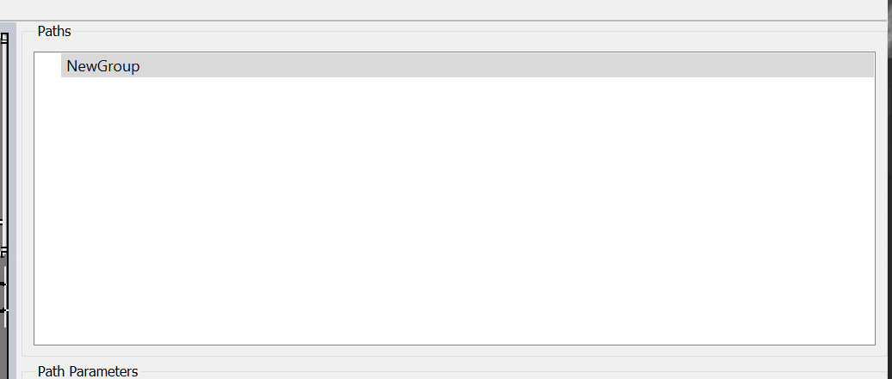

Create A Path Group

Now create a new path group. Creating a new path group is done with
the Edit/Add Path Group menu item. This creates a new path group named
“NewGroup” which will be seen in the Path File window. This path can
be renamed by double clicking the name “NewGroup” in the Path File window.
Next: Create A Path